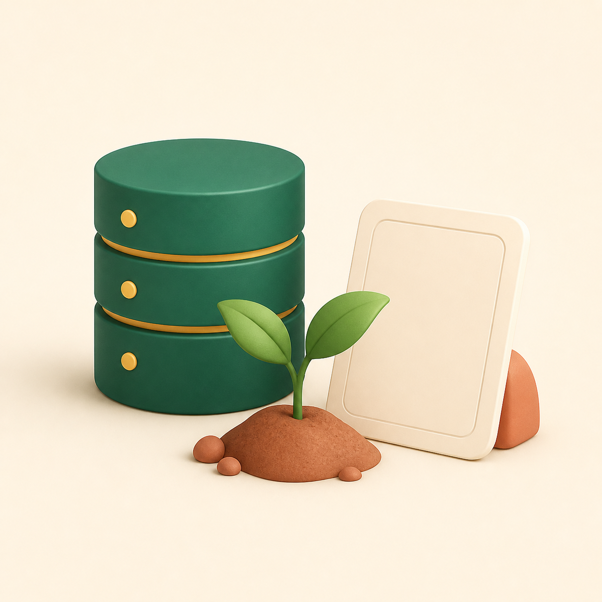

TemanUsaha AI
TemanUsaha AIStack yang langsung ke demo
Dibangun untuk selesai.
GPTInterface
Custom GPT
Reasoning + Bahasa IndonesiaCVXTruth
Convex
HTTP Actions + database + realtimeNXTProof
Next.js
Today · Orders · AI ActivityCDXBuild
Codex / GPT-5
Orkestrasi, implementasi, dan verifikasiYang dibangun
Loop utama
- 6 GPT Actions
- Mutation atomik
- Dashboard realtime
- Reset data demo
- AI Action Receipt
Yang sengaja ditunda
Setelah validasi
- Payment gateway
- OCR & accounting
- Forecasting
- Multi-tenant admin
Prinsip build: satu pengguna, satu masalah, satu workflow utama, satu bukti hasil. Fitur lanjutan baru layak setelah alur ini diuji bersama warung nyata.
